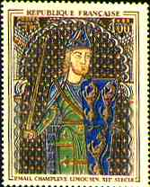
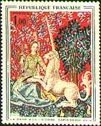
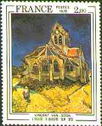
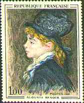
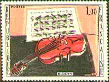

The French Art Series (also known under the name Musée imaginaire - Imaginary Museum) started in 1961 with a set of four stamps, reproducing the works of Braque, Matisse, Cezanne and R. de la Fresnaye. Using a big format (36.85 x 48 mm) and characterized by an excellent typographic quality (printed for the first time in such a big format in TD6 = taille-douce six couleurs), this series gave the start of a new era in the domain of the reproduction of art on stamps. In over 35 years of existence, all areas were covered, from cavern paintings in Lascaux (SG 1786) and Egyptian Art (SG 2111) to the contemporary artists, who created works to be reproduced on the postage stamps. Now let the stamps speak for themselves and let’s enjoy their perfection.
Stained Glass Windows

Notre-Dame Cathedral, Paris
The stained-glass tradition of Notre-Dame combines biblical narrative with coloured light, making the windows part of the cathedral’s architectural design.
Sens Cathedral
Sens was among the pioneering Gothic cathedrals of France. Its glazing belongs to a tradition in which figures, ornament and light were designed to be seen together.
Sainte-Chapelle, Paris
Built for King Louis IX in Paris, Sainte-Chapelle is renowned for walls that seem almost entirely made of stained glass. Its imagery recounts episodes from the Bible.
Chartres Cathedral
Chartres preserves one of the outstanding ensembles of medieval stained glass. The characteristic rich blue is especially associated with its windows.Email and Tapestries

Champlevé enamel
In champlevé enamel, recesses cut into metal are filled with coloured enamel and fired. The technique flourished in medieval decorative art.
The Lady and the Unicorn
The Lady and the Unicorn is a celebrated group of six late-medieval tapestries, usually interpreted through the five senses and a sixth, more enigmatic panel.
The Apocalypse tapestry
The Apocalypse Tapestry in Angers is a vast fourteenth-century woven narrative inspired by the Book of Revelation, notable for its dramatic figures and repeated scenes.
Jean Lurçat — tapestry
Jean Lurçat was central to the twentieth-century revival of tapestry. His bold outlines and expressive colour helped give woven art a renewed monumental role.Classical Period

Théodore Géricault
Théodore Géricault brought drama, movement and psychological intensity to French Romantic painting. His best-known monumental work is The Raft of the Medusa.
Jean-Antoine Watteau
Watteau transformed the fête galante into a poetic subject, placing elegantly dressed figures in landscapes where music, theatre and melancholy meet.
Eugène Delacroix
Delacroix used energetic composition and expressive colour to evoke history, literature and emotion. His paintings became touchstones of French Romanticism.
Jean-Honoré Fragonard
Fragonard’s paintings are associated with the playful elegance of the Rococo. His rapid brushwork and luminous colours animate scenes of courtship and private life.Modern Period - 1

Vincent van Gogh
Van Gogh developed his distinctive brushwork and intense palette during his years in France, especially in Paris, Arles and Saint-Rémy.
Henri Matisse
Matisse made colour an independent expressive force. His painting helped shape Fauvism and later explored simplified forms and decorative harmony.
Paul Cézanne
Cézanne built landscapes and still lifes from carefully related planes of colour. His approach to structure deeply influenced twentieth-century painting.
Pierre-Auguste Renoir
Renoir is celebrated for luminous portraits and scenes of everyday pleasure. His brushwork gives figures and surroundings a warm, shimmering unity.Modern Period - 2

Edgar Degas
Degas studied movement and unusual viewpoints, particularly in ballet scenes. His art combines precise observation with daring composition.
Paul Gauguin
Gauguin favoured broad areas of colour and symbolic forms rather than naturalistic description, influencing later modern artists.
Raoul Dufy
Dufy’s airy line and bright colours bring rhythm to scenes of music, leisure and coastal life. His decorative style makes movement seem effortless.
Marc Chagall
Chagall’s dreamlike images bring together personal memory, village life, lovers and floating figures. His poetic symbolism resists a single literal reading.First Day Covers

Maurice Utrillo — Le Lapin Agile
Le Lapin Agile, the Montmartre cabaret, became one of Utrillo’s characteristic Parisian subjects. The cover links the painting to its postal commemoration.